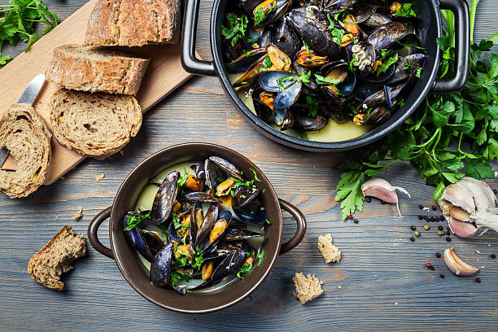
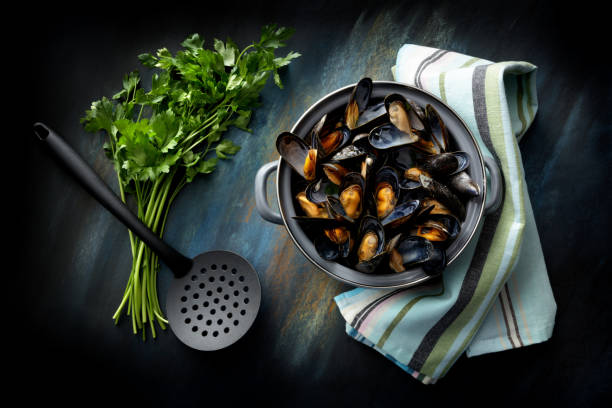
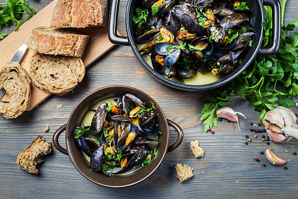
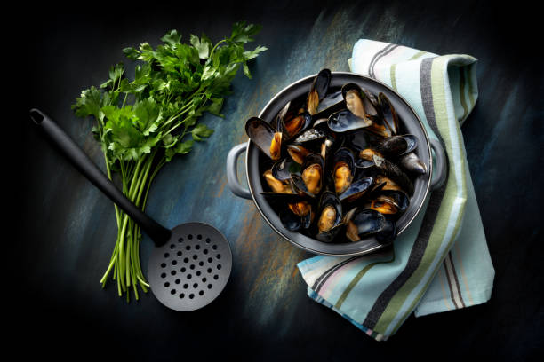

Välkommen till vårt hemmakök!
Gong Bao Ji Ding
2022-10-25
Gong Bao Ji Ding är en populär kinesisk rätt som kommer från Sichuan provinsen. I västvärlden är denna rätt mer känd som kungpao kyckling. Men detta recept är mer Sichuan autentisk.
Grekisk paj
2022-10-25
Denna vegetariska grekiska paj är perfekt både till den enkla vardagen eller som tillbehör på buffébordet! Den är enkel att göra men otroligt smakrik. Blir extra god med tsatziki till.
Fransk potatissallad
2022-10-25
Fransk potatissallad är det perfekta tillbehöret för den som önskar en lätt och fräsch sallad. Passar väldigt bra till gravad lax
Morotstårta
2022-10-25
Här finner du en otroligt härlig trelagers morotstårta! Genom att finriva morötterna och använda olja istället för smör i degen bevaras tårtans saftighet. Limeskal i frostingen gör det lilla extra för en otrolig smak!

 



Moules Marinieres
2022-10-25
Moules Marinieres är en klassisk rätt med blåmusslor från Frankrike. Med en perfekt smakbalans från havet, färska örter, vitt vin och grädde. Rekomenderat tillbehör är frasigt vitlöksbröd.
Asiatisk lax
2022-10-25
Denna maträtt är sprängdfylld av smaker från det asiatiska köket! Laxen bakas med ett täcke av sweet chili, teriyaki och olika färska kryddor och passar bra som extra sås när rätten ska serveras.